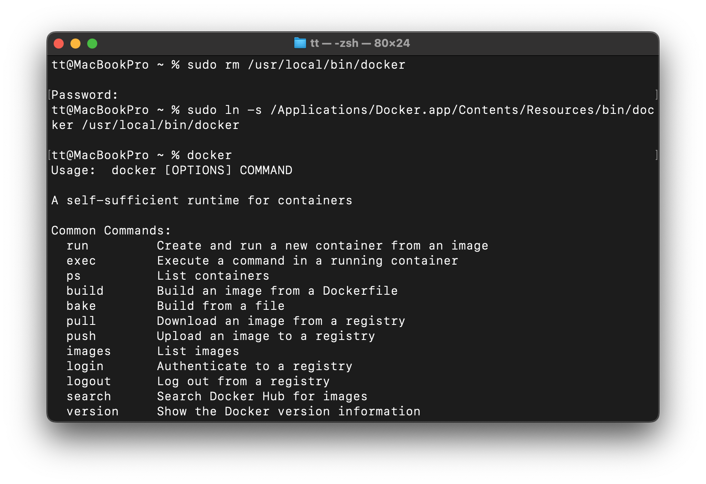

fix-docker-install
4. Run Install Image on Container

01 - problem
I guess my sym for docker desktop app with it's link nested in local was wrong
When i look docker in /usr/local/bin/docker
i got
t@MacBookPro ~ % ls -l /usr/local/bin/docker lrwxr-xr-x@ 1 root admin 153 Sep 7 07:49 /usr/local/bin/docker -> /private/var/folder ....
I don't get this yet, but checking path showed
/usr/local/bin: in it

02 Solution
🔧 3. The fix
You need /usr/local/bin/docker to point to the real binary inside your installed Docker Desktop app, not the translocated one.
1Remove the bad symlink:
sudo rm /usr/local/bin/docker
2. Create a new one pointing to the real Docker CLI inside Applications:
sudo ln -s /Applications/Docker.app/Contents/Resources/bin/docker /usr/local/bin/docker
Test it:
docker
or
docker --version